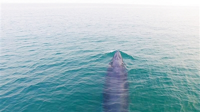

陈默摄
邓克顺摄
暗灰色的庞大身躯，突然从海平面跃出，在空中拱背后落入海中，溅起巨大的水花……今年3月以来，频繁出现在广西北海涠洲岛海域的鲸群成为游客和当地群众追捧的“网红”，也引起了国内外鲸豚专家的密切关注。
近日，广西省北海市举行新闻发布会称，经南京师范大学鲸豚组与儒艮国家级保护区的专家组，以及由广西科学院、广西钦州学院、广东汕头大学和中国科学院水生生物研究院多名专家组成的联合科考团队共同认定，北海涠洲岛海域所发现的鲸鱼是“迄今为止，中国大陆发现的首例近海岸分布的大型鲸类生活群体”，具有极为重要的生态和科研价值。
“准确来说，这次发现表明，涠洲岛海域是近30年来唯一有记录的大型鲸类的摄食场所。上世纪80年代以前，中国大陆沿海地区就有大型鲸类摄食和繁育场所。”参与本次科考活动的广西科学院广西北部湾海洋研究中心博士陈默在接受科技日报记者采访时说。
我国海域面积辽阔，但是近海水域较浅，多数鲸类分布在较深的远岸水域。这次发现的大型鲸类生活群体属于什么物种？
“涠洲岛海域发现的鲸群，确认为布氏鲸中体型较小的鳀鲸（又称为小布氏鲸），该种鲸一般被认为是近海鲸类，个头不大，一般体长9—12米，头顶有明显三条平行的纵脊，不会长距离迁徙。这种鲸类都是追着食物走，常年都在捕食，不同于其它如蓝鲸等大型须鲸的长途迁徙。”陈默表示，鳀鲸所需要的生活环境一般是人为干扰少、食物充足的海域。
为深入了解鲸群的活动情况，掌握一定区域内鲸的活动规律，陈默和科考团队通过照片识别、无人机搜寻、布放水下声学设备等手段，开展涠洲岛全海域的截线调查工作。“在研究上我们采用空中、海面和海底的立体监测，最大限度地获取鲸类活动资料。”陈默说。
由于污染和人类活动的侵扰，大型鲸类一度被认为在中国大陆沿海已经绝迹。陈默认为，这一群体的发现，最重要的是可以让中国的鲸类研究者们能有一个近距离的研究。“作为地球上最大的哺乳动物物种，鲸类具有一些特殊性，人类对它们的研究非常有限，对于鲸类与环境的关系、全球气候变化对于鲸类的影响、鲸类对于环境变化的协调和适应性，以及很多我们仍未能了解的特征，都有待探寻。
作为一种与众不同的鲸，鳀鲸喜欢生活在温水中，近海一带是它们最喜欢的生活环境。
遗憾的是，鳀鲸喜欢生活的近海恰恰也是人类活动最频繁的海域。尽管目前鲸群在涠洲岛海域的生存状况良好，但随着鲸鱼的曝光率越来越高，有游客为一睹鲸的“芳容”，甚至乘坐岛民私人运营船只到相关海域近距离寻觅追逐。
“鳀鲸是国家二级保护动物。为了减少人类活动对于鲸群的伤害，政府应加快相关立法和政策制定，加大执法力度，加强对涠洲岛和周边居民的科普宣教工作。”陈默说。
目前，涠洲岛旅游区管理委员会发布了《涠洲岛鲸鱼保护及维护海洋生态环境倡议书》，呼吁各界共同爱护鲸鱼生存环境。北海市还计划划定一个鲸群保护区，建设观鲸监测站，规范鲸群保护工作。（江东洲 刘 昊）